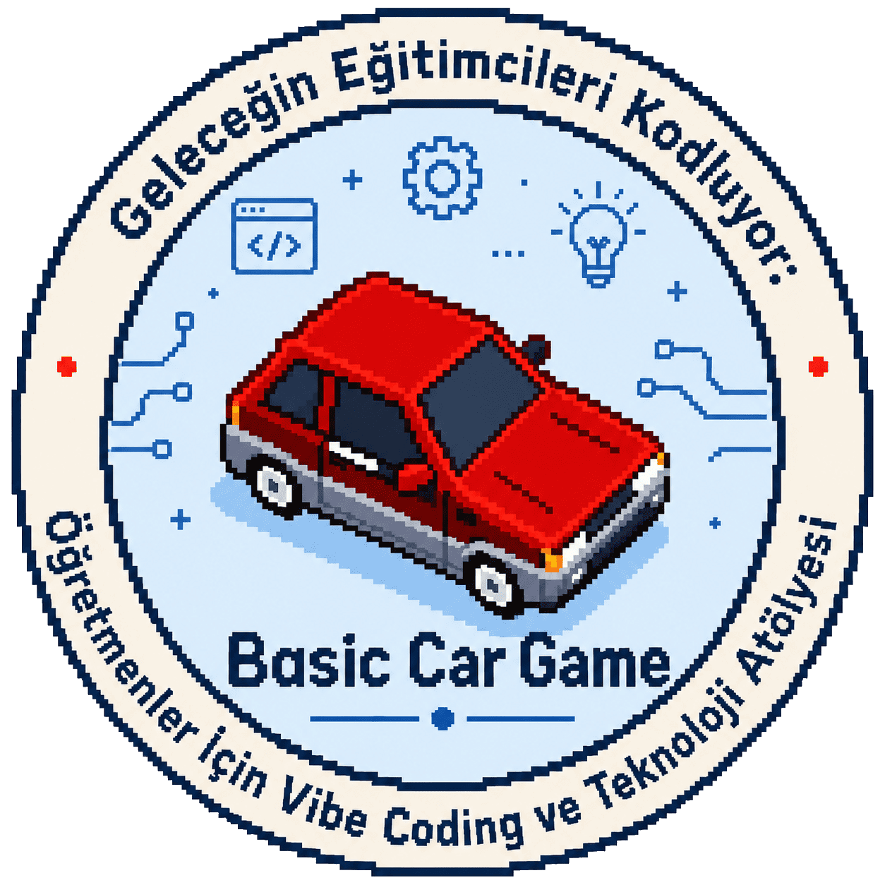

Doğdum.
Bu uzun çizgi Bursa'da başladı.
Bursa üretimi, Torul onaylı
Hem sınıf ortamında hem de webde bir şeyler üretmeyi seven bir İngilizce öğretmenliği öğrencisiyim.
Yaşayan portfolyo
Tabii ki daha başka şeyler de var, ama dişlerimi fırçaladığımı yazmak istemiyorum; bunu herkes yapıyor.
Bu uzun çizgi Bursa'da başladı.
İngilizce Öğretmenliği lisans eğitimime Bursa Uludağ Üniversitesi'nde başladım.
Hocam Prof. Dr. Zübeyde Sinem Genç danışmanlığında Bursa Uludağ Üniversitesi İngilizce Öğretmenliği Topluluğu'nu kurdum.
KaynakNilüfer Yapay Zeka Hackathonu'nu takım arkadaşım Metin Torun ile kazandım.
KaynakT.C. Gençlik ve Spor Bakanlığı ÜNİDES kapsamında hazırladığım "Geleceğin Eğitimcileri Kodluyor" projem onaylandı. Projeyi başkanı olduğum Bursa Uludağ Üniversitesi İngilizce Öğretmenliği Topluluğu üzerinden yazdım ve 2-3 Mayıs 2026 tarihlerinde arkadaşım Metin Torun ile gerçekleştirdik.
KaynakDanışman hocam Prof. Dr. Zübeyde Sinem Genç rehberliğinde Osmangazi temalı bir coursebook hazırlama, materyal geliştirme ve erişkinlere İngilizce öğretme eğitimi verme fikriyle şekillenen Gazi Projesi için Osmangazi Belediyesi'nden yeşil ışık aldım ve projenin ilk bölümü üzerinde hâlâ çalışıyorum.
Devam ediyorTÜBİTAK 2209-A Üniversite Öğrencileri Araştırma Projeleri Destekleme Programı'nın 2025 çağrısına proje ortağım Metin Torun ile gönderdiğim "Yabancı Dil Eğitiminde Yapay Zeka Destekli Masa Oyunu Oluşturma Platformu" projesi kabul edildi.
Devam ediyorBireysel üretimler
Bursa Uludağ Üniversitesi İngilizce Öğretmenliği Topluluğu için hazırladığım, PHP temelli dinamik web sitesi.

Phaser JS ile yapılmış küçük bir 2D piksel oyun denemesi.

Minecraft temalı, statik fan-made trivia oyunu.

Geleceğin Eğitimcileri Kodluyor atölyesinde, gösterim amaçlı oluşturduğum basit araba oyunu.
Bağlantı
Soru, öneri veya ortak çalışma için bana ulaşabilirsin.
yusufxterzi@gmail.com